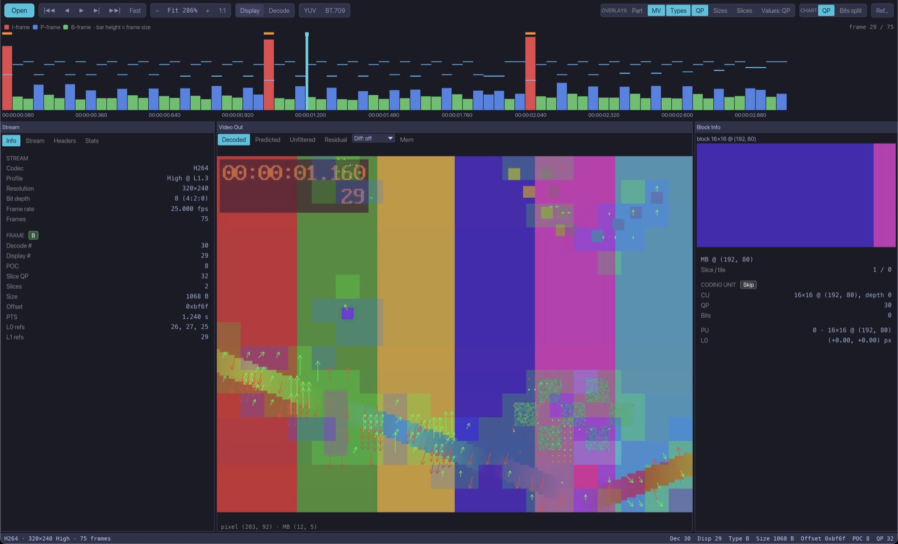

Open source, with self-contained packages for macOS, Linux and Windows. Inspect frame sizes and types, per-block QP, prediction modes, motion vectors and partitions, decoder reconstruction stages and exact header syntax, at playback speed.

Self-contained packages. Nothing else needs to be installed.
$ xattr -d com.apple.quarantine /Applications/StreamLens.app
$ chmod +x streamlens-*.AppImage $ ./streamlens-*.AppImage
A .tar.gz with the bare binary is also on the release page.
streamlens.exe.Needs Rust (stable), git, cmake, a C/C++ toolchain, clang and nasm (x86_64). See the README for per-OS packages.
$ git clone https://github.com/streamlens-io/streamlens $ cd streamlens $ ./vendor/build-decoders.sh $ cargo run --release -p streamlens -- video.mp4
StreamLens is under active development. Found a stream it handles wrong, or need a feature? Open an issue. Pull requests are welcome.
Open an issue →